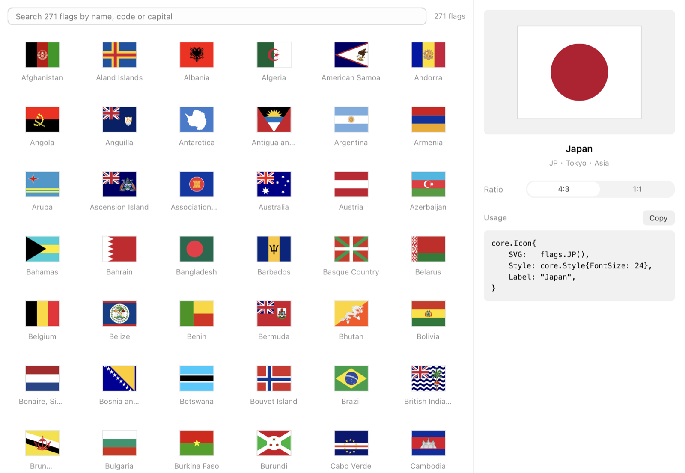

每面国旗，原生绘制
国旗就是 flag-icons 原本的 SVG，构建时逐个检查 NSGo 的 SVG 解析器能否完整绘制。
两种比例
每面国旗都有 4:3 和 1:1，涵盖国家和地区、苏格兰这样的次级行政区，以及欧盟这样的组织。
只带用到的
每面国旗一个访问函数，没有注册表：应用只链接实际调用的国旗。
按代码查找
catalog 按运行时才知道的代码查找国旗，比如语言区域里的地区，并给出英文名。
锁定上游
从 flag-icons 的一个固定提交生成，CI 每次都对照它检查。
开始使用
在使用 Go 1.26 或更高版本的 NSGo 应用里加入本库。
go get github.com/nsgo-dev/nsgo-icons-flags
import flags "github.com/nsgo-dev/nsgo-icons-flags"
core.Icon{
SVG: flags.JP(),
Style: core.Style{FontSize: 24},
Label: "Japan",
}
JP 是 4:3 的国旗，JPSquare 是 1:1 的。代码要到运行时才知道时，用 catalog：
import "github.com/nsgo-dev/nsgo-icons-flags/catalog"
if f, ok := catalog.Find("GB"); ok {
core.Icon{SVG: f.SVG(), Style: core.Style{FontSize: 24}, Label: f.Name}
}
查找国旗
Gallery 按名称、代码或首都搜索所有国旗，并给出绘制选中国旗的代码，可以直接复制。在检出的仓库里运行：
git clone https://github.com/nsgo-dev/nsgo-icons-flags cd nsgo-icons-flags go tool nsgo dev examples/gallery